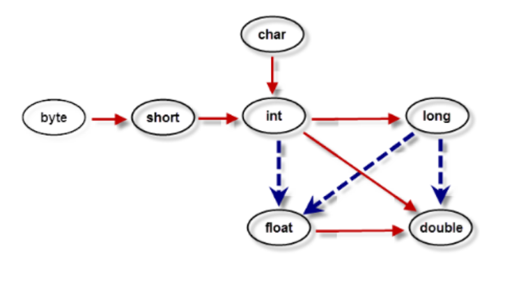

类型转换
自动类型转换
自动类型转换指的是容量小的数据类型可以自动转换为容量大的数据类型。如图，红色的实线表示无数据丢失的自动类型转换，而虚线表示在转换时可能会有精度的丢失

[示例1]自动类型转换:
1
2
short b = 12; //合法
short b = 1234567; //非法，1234567超出了short的表数范围
复制
强制类型转换
强制类型转换，又被称为造型，用于显式的转换一个数值的类型。在有可能丢失信息的情况下进行的转换是通过造型来完成的，但可能造成精度降低或溢出
语法格式:
1
(type)var
复制
运算符"()"中的type表示将值var想要转换成目标数据类型
[示例2]强制类型转换:
1
2
3
4
5
6
7
double x = 3.14;
int nx = (int)x; //值为3
char c = 'a';
int d = c + 1;
System.out.println(nx); //3
System.out.println(d); //98
System.out.println((char)d); //b
复制